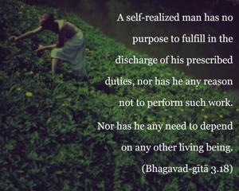
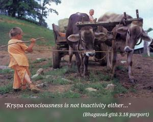

A self-realized man has no purpose to fulfill in the discharge of his prescribed duties, nor has he any reason not to perform such work. Nor has he any need to depend on any other living being.


A self-realized man is no longer obliged to perform any prescribed duty, save and except activities in Kṛṣṇa consciousness. Kṛṣṇa consciousness is not inactivity either, as will be explained in the following verses. A Kṛṣṇa conscious man does not take shelter of any person – man or demigod. Whatever he does in Kṛṣṇa consciousness is sufficient in the discharge of his obligation.